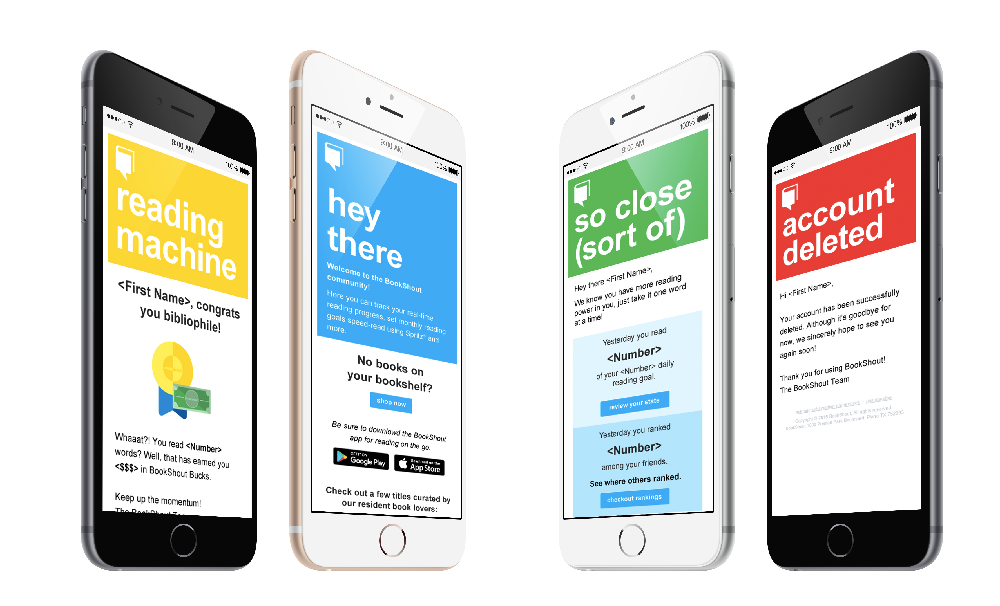
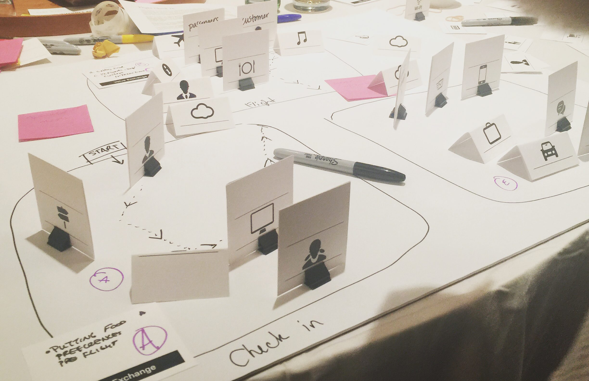

Short Bio
Timothy Bardlavens is "the black guy." With a career trajectory that's seemed to have move at light speed, he has grown from a Graphic Administrator at a trophy shop to a Sr. Director of Creative and UX in little under five years. His passions can be narrowed down into 5 simple categories: diversity & inclusion, digital design, leadership/mentoring, design thinking & research and house plants. Within these five lie a plethora of sub-categories, talents, focuses, eccentricities and oddities. At Microsoft his work is focused on the future of product and product innovation, in addition to working within the organization to understand and improve its diversity and inclusion practices.
From a family of four to seven
I'm originally from Columbia, SC by way of Greensboro, NC. For a solid part of my life, myself and my two older siblings were raised by my divorced mother in a household that never made over $30,000 per year—when she remarried that increased to about $48,000, but also increase the household size from four people to seven, needless to say we didn't have much. Columbia wasn't a creative town, there was only one design firm that serviced the entire city, there was nothing there to inspire me artistically growing up—to be honest I never cared for art; my brother, sister and mother knew how to draw or paint, I was the writer, that was my love—poetry and short stories.
How did you first get interested in design?
Originally, I never cared about design, I wanted to be a writer—my goal was to be Editor-in-Cheif of Jet magazine. Even when I made Graphic Design my minor, it was a means to an end, I figured I needed to learn about magazine layouts. What really got me into design was when I was in undergrad, an English Major, I received an opportunity to work in the Office of Student Activities as a student assistant. My supervisors were these two BBWs (beautiful black women) Mrs. Dee, the Administrative Assistant, and Mrs. Diane, the Fiscal Technician; they saw in me something that, at the time, I didn't see. They took me under their wing, taught me that my jokiness was a defense mechanism and showed me I had more to offer than what I presented—they focused me and I credit a lot of my success to the grace of God for placing them in my life. I was given the opportunity to create posters, digital boards and HTML emails for campus events; I would stay in the office until 2 or 3 am, sometimes never leaving the office, just creating—I was addicted. By my second semester Junior year I'd switched my major from English to Design. I immersed myself so deeply into design that I would skip any other class but my design courses and had to "bury" family members several times to maintain my 3.3 GPA.
Tell me about the work you've done?
I've done so much in such a short amount of time! I've held roles ranging from a simple Graphics Administrator, doing prepress and production designs for a trophy company in Columbia to, most recently, being a Sr. Director of Creative and UX at a newly acquired start-up in Dallas. I've worked within various industries, such as a dental manufacturing company as a sole designer to major corporations such as Capital One and now Microsoft. Each of these roles has been in anything from trade-show and display design to brand marketing to product design and UX. I've done a lot, but I've found my niche in UX. There's something so fascinating about human behaviors, how they experience products, how we can affect that experience and the relationship between cognition and emotion within these experiences. So, a large part of my work now is to understand and develop experiences that better influence intended behaviors.

What are your proudest accomplishments of your career?
Every leap of faith I take is a proud accomplishment for me. When I decided to leave the comfort of the Carolinas and move 1,100mi away to Dallas for a new job was a huge accomplishment, because I stepped out of my comfort zone. When I felt I had more to offer than the opportunities presented to me within that role and decided to pursue more challenges was big for me. Now, moving 2,100mi away from the new friendships I just developed for another opportunity is another accomplishment for me. I believe I've been so successful because I've never waited for a person to say, "you're ready," when I feel I'm ready for a new challenge, I go for it and, trust me, I'm ALWAYS scared, but I do it.
...being black man in Corporate America. There's this understanding that I'm not allowed to have a bad day or I'm seen as unapproachable—to be angry is to be dangerous.
What have been your biggest struggles of your career?
I have two levels of struggle to deal with. On the surface, it's being a black man in Corporate America. There's this understanding that I'm not allowed to have a bad day or I'm seen as unapproachable—to be angry is to be dangerous. Every environment isn't like this, but it is understood that this is how you approach it until you understand the mindset of the organization and how true to yourself you can be within it.
The second struggle is being a gay man. There are usually a few types of people you run into if you're found to be gay within a company. Some assume you're gay, which, on some level, is a bit insulting. There is a consistent discomfort that a bigot is in your midst. Then there are the "too friendly" types who want to know, "how do you do it," "can you show me how to ___," or assume you love Beyoncé and have a pair of stilettos in the back corner of your closet. I remember being fearful of working for a Christian-based company because I didn't want to be judged and lose my job if they found out I was gay. I also remember being sexually harassed by one of my female co-workers who felt it was ok to send me pictures of half naked men on motorcycles and feeling more uncomfortable than I'd ever felt.
What I've found to be interesting is once some find out that I'm gay, I'm seen less like the "black guy" and more like the "gay guy," until there is a disagreement or I have a bad day—then I revert back to the 'black buy." As I've advanced I've better learned how to navigate these issues, but they're eyeopening for a young gay, black professional.
What are you doing that's special that sets you apart from your careers?
I believe the most interesting thing I'm doing now relates to my thesis. While pursing my Master of Fine Arts in Visual Communication, out of great frustration, I chose the thesis topic entitled: Vote Rationally, Vote Intelligently, Just Vote: An Application to Address Uninformed Voting and Voter Apathy. This topic, of course, came out of my lack of understanding 1) Trump Supporters, 2) Why people were "Feeling the Bern" 3) Why people weren't voting. It made no sense as to why people cared more about how they felt than what made sense, what was logical. So a large portion of my research is on the psychology of politics and how emotions drive actions. My goal is to understand if there is room for rational thought in politics or is it all purely a game of emotions. Ultimately, the product of my research will be a strategy to better inform voters and encourage informed participation, especially in local and state elections.
There isn't nearly enough exposure for young people in our communities interested in design early in life.
How can design be more accommodating to underrepresented populations of people?
I think design could be more welcoming in its outreach to marginalized and underrepresented people. There isn't nearly enough exposure for young people in our communities interested in design early in life. So I think the field should work toward community outreach at a greater scale. People in our communities should be introduced to design earlier in life by people in the field, which can sometimes seem very elitist from the outside looking in.
What have your experience been as a person of color in the design industry.
I've felt like a black ink dot on a very white piece of paper. It's a crass way to put it, but true nonetheless. I will say the industry is wonderfully accepting and I never felt more at home than when I was at the AIGA Leadership Retreat and I never felt more love from like-minded professionals than when meeting leaders like Julie Anixter, Antionette Carroll and so many others. However, being a black designer, at times, feels like being a female mechanic—you know you have the skills, but you get a bit of imposter syndrome and you find yourself working harder to prove your worth to your peers.
What are your biggest motivators?
Secretly, I took a page from a Beyoncé interview. She said her biggest competition was herself and she would study her own successes and opportunities and used those milestones for improvement. Before seeing the interview I was solely focused in where I was in my career compared to those around me. I realized this train of thought kept me depressed and consistently feeling as though I were lagging behind, it kept me jealous of others. Now, my only competition and motivator is myself, how can I be a better me—what motivates me is being the best me I can possibly be—cliché, I know.
How do your friends and family feel about the work you've done?
They're proud of me/happy for me. I don't think they truly know or understand what I do, but they see I'm successful in doing it.
What do you love most about working in design?
I tell people all the time, I don't understand humans. Design helps me understand people on an intuitive and emotional level and I find it so fascinating. The greatest thing about design is that it's multidisciplinary. Strategy, business, product, research, project management and more are all housed within design—it's so flexible that it's hard to get bored.
we need to stop thinking solely about design and designers, but about the community, about the general populous
What would you like to see changed about the design field?
Outside of it's gross lack of diversity? I'd love for the industry to be more civically engaged. We are visual communicators, we have a foothold in literally every industry and yet when we choose to speak out or support a cause, we always lean on posters. There is more we can do, more we can say and we have a great deal of power to support any cause effectively. This said we need to stop thinking solely about design and designers, but about the community, about the general populous—I've been in so many situations where I've asked, what about just doing something for the good of people, not JUST designers.
How can design be more accommodating to underrepresented populations of people?
Education and exposure. I didn't learn about graphic design until college. We MUST get into communities, have Design Camps or participate in after-school programs, anything that will show underrepresented youth that this career is real, available and it's lucrative.
What are you working on right now, either for work or for yourself?
Outside of my thesis research, I'm starting to do much more within organizational diversity and inclusion practices, creating strategies for how to build up or improve what already in place. My goal is to support Microsoft in its growing initiatives, as well as assist outside organizations with their efforts.
Where do you see yourself in 5 or 10 years? Do you think you'll stay in design?
I will always be in design! In addition to a consistent growth trajectory in design, I see myself teaching courses and speaking more. There's so much to talk about, I feel many speakers in the industry are invited to speak on their portfolios more than on meaningful topics to advance the industry or inspire young designers. One of my largest goals is to be one of the faces that help inspire and lead more people of color into the industry.
failure is always an option, but getting back up on your feet is required
What advice would you give to folks from similar backgrounds who are in design or hoping to get into it?
Be patient with yourself, but don't wait for others to tell you you're ready. Don't be scared to take a leap of faith and move across the state or across the world to reach your goals—failure is always an option, but getting back up on your feet is required. Also, NEVER compromise who you are due to the perceptions of others. I've found by standing in my truth, by introducing myself as "the black guy", by maintaining my crass sense of humor and by my willingness to leave an organization that doesn't accept or attempts to stifle my "me-ness" I've led a far happier, more successful career thus far.